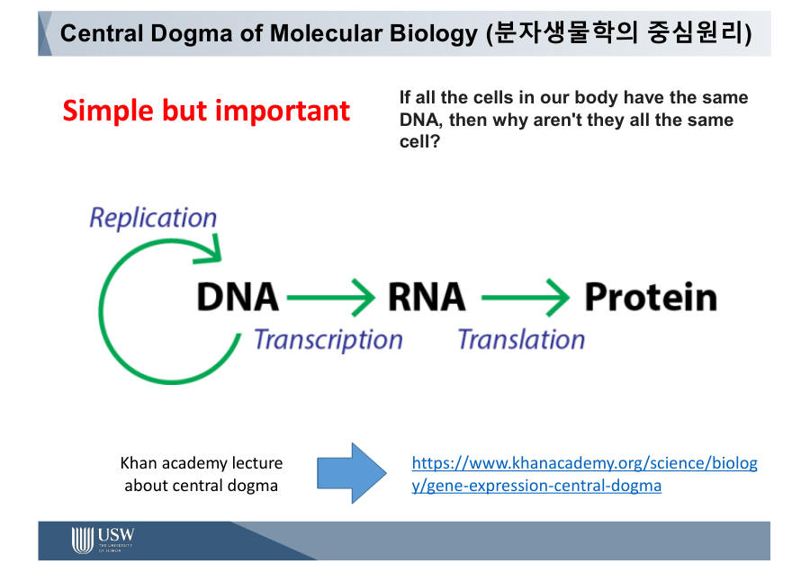
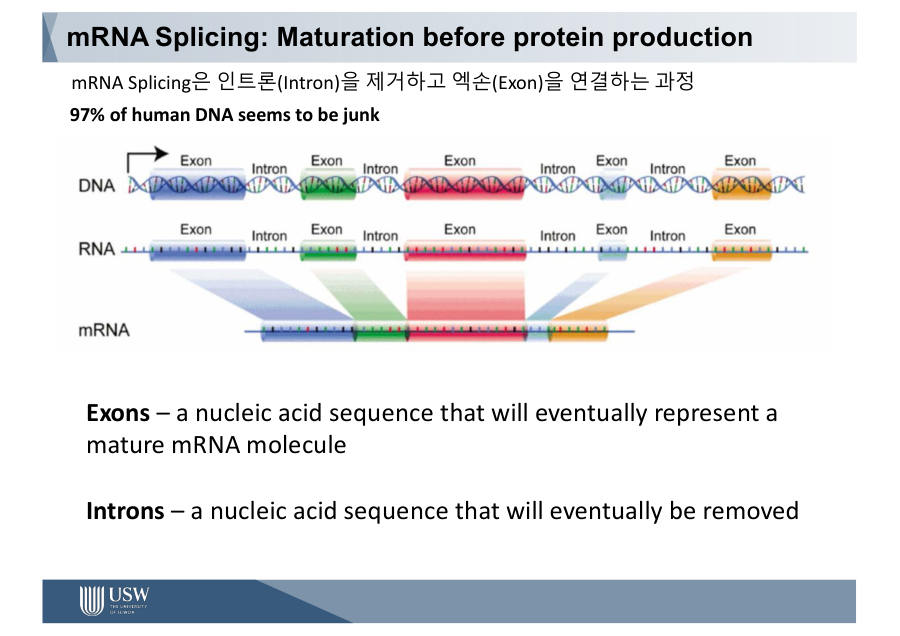
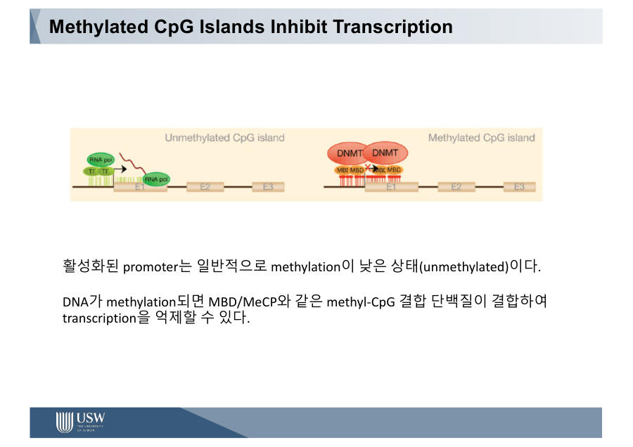

바이오 기초 — 몸은 설계도로 만들어진다
0장에서 배운 DNA, 유전자, 단백질이 어떻게 이어져 일하는지 배워요. 시험에서 제일 자주 나오는 "DNA → RNA → 단백질" 흐름과, 글자 하나가 바뀌면 생기는 일(돌연변이)이 핵심이에요.
2-1. 몸의 크기 감각과 숫자
먼저 숫자 감각부터 잡아요. 교수님은 "전문가와 비전문가의 차이는 숫자를 대충 아느냐 정확히 아느냐"라고 말했어요. 아래 숫자는 꼭 기억해 두세요.
| 무엇 | 숫자 |
|---|---|
| 사람 몸의 세포 수 | 약 30조 개 (슬라이드 요약 3×10¹³) |
| 염색체 | 23쌍 |
| 게놈(DNA 전체) | 약 30억(3×10⁹) 염기쌍 |
| 유전자 | 약 2만 개 |
| 세포 중 가장 많은 것 | 적혈구 (개수로 전체의 약 83~84%) |
본문 계산으로는 약 37조 개(3.7×10¹³)가 나오기도 해요. 그래서 서술에서는 "수십조 개이고 대부분이 적혈구"라고 써도 안전해요. 눈에 보이는 근육·피부 세포는 개수로는 얼마 안 돼요.
몸의 세포는 거대한 도시의 시민이에요. 시민 대부분은 혈액을 나르는 일(적혈구)을 하고, 나머지가 근육, 피부, 뇌 같은 일터에서 일해요. 모두 같은 헌법(DNA)을 가지고 있어요.
교수님은 "건강"을 항상성(homeostasis)으로 설명했어요. 항상성은 바깥 환경이 변해도 몸속 상태(예 체온 36.5도)를 일정하게 지키려는 자동 조절이에요. 에어컨이 온도를 맞추는 것과 같아요.
흐름은 자극 → 수용기 → 제어중추(뇌) → 효과기 → 반응이에요. 더운 날 피부(수용기)가 열을 느껴 뇌에 알리고, 땀샘(효과기)이 땀을 내서 체온이 다시 내려와요. 이 과정 곳곳이 데이터를 재는 지점이라서, 항상성이 잘 유지되는 사람이 건강한 사람이에요.
사람의 몸은 약 30조 개의 세포로 이루어져 있고, 세포의 핵에는 23쌍의 염색체가 있으며, 유전체는 약 30억 염기쌍으로 약 2만 개의 유전자를 포함한다. 항상성은 외부 환경이 변해도 체온 같은 내부 상태를 일정하게 유지하는 조절 작용이다.
잠깐 확인 — 게놈의 염기쌍 수와 유전자 수는?
염기쌍은 약 30억(3×10⁹), 유전자는 약 2만 개예요. 30억 글자 중 레시피가 약 2만 장이라고 기억하세요.
2-2. 센트럴 도그마 — DNA에서 RNA로, RNA에서 단백질로 ★★★
센트럴 도그마(Central Dogma)는 "유전 정보가 흐르는 기본 길"이라는 뜻이에요. DNA의 정보가 RNA로 옮겨지고, RNA의 정보로 단백질이 만들어져요.
이 흐름에는 이름이 3개 있어요. 처음에는 낯설어도 아래 그림과 요리 비유로 보면 쉬워요.
- 복제(replication) : DNA를 똑같이 한 벌 더 만드는 것 (세포가 둘로 나뉠 때)
- 전사(transcription) : DNA에서 필요한 부분만 RNA로 베껴 쓰는 것
- 번역(translation) : RNA를 읽고 단백질을 만드는 것
왜 원본을 두고 복사할까요? 원본 DNA가 상하면 큰일이라서, 몸은 원본을 핵 안에 안전하게 두고 복사본(RNA)만 밖으로 보내요. 교수님도 "DNA는 책 전체이고, 필요한 몇 쪽만 mRNA로 옮겨 적는다"고 말했어요.

센트럴 도그마는 유전 정보가 DNA에서 RNA로(전사, transcription), RNA에서 단백질로(번역, translation) 흐른다는 원리이며 DNA는 복제(replication)를 통해 자기 자신을 복사한다. 이 흐름의 어느 단계에서든 오류가 생기면 질병으로 이어질 수 있다.
잠깐 확인 — DNA를 RNA로 베끼는 과정과 RNA로 단백질을 만드는 과정의 이름은?
DNA → RNA는 전사(transcription), RNA → 단백질은 번역(translation)이에요. "필요한 쪽을 베껴 쓰기 → 요리하기"로 기억하세요.
2-3. RNA와 코돈 — 글자 3개가 단어 1개
RNA는 DNA와 비슷하지만 몇 가지가 달라요. 보통 한 가닥이고, 염기 중 T 대신 U(우라실)를 써요. 그래서 RNA의 글자는 A, U, G, C예요.
번역에 일하는 RNA는 3종류예요.
리보솜이 mRNA를 글자 3개씩 끊어 읽는데, 이 3글자 묶음이 코돈(codon)이에요. 코돈 1개가 아미노산 1개를 정해요. 코돈 순서대로 아미노산이 이어져서 단백질이 돼요.
코돈 = mRNA 글자 3개 = 아미노산 1개 (아미노산은 20종류).
| mRNA | A | U | G | G | A | G | G | C | U | U | A | A |
AUG = 시작(메티오닌) · GAG = 글루탐산 · GCU = 알라닌 · UAA = 끝(종결)
- 시작 코돈은 AUG 한 개
- 종결 코돈은 UAA, UAG, UGA 세 개
- RNA에서는 T 대신 U를 써요
코돈은 단어예요. "시작" 단어(AUG)가 나오면 문장을 쓰기 시작하고, 중간에는 재료 단어를 이어 붙이다가, "끝" 단어(UAA·UAG·UGA)가 나오면 마침표를 찍고 멈춰요. 마침표가 일찍 나오면 문장이 중간에 끊기겠죠. 이 점은 2-7 돌연변이에서 다시 나와요.
시작은 "AUG" 하나, 끝은 "U로 시작하는 3개" (UAA, UAG, UGA)라고 기억하세요.
아미노산은 공통 뼈대에 달린 R기(곁사슬)가 달라서 20종류가 돼요. 이 R기의 성질(물을 싫어하는지, 좋아하는지, 전기를 띠는지)이 사슬이 어떻게 접힐지를 정해요. 단백질은 사슬이 모양대로 접혀야 비로소 일을 해요. 교수님은 "R기가 다르다는 단순한 차이가 조합과 접힘으로 엄청 다양한 단백질을 만든다"는 점만 알면 된다고 했어요.
코돈은 mRNA에서 연속된 염기 3개로 아미노산 1개를 지정하며, 개시 코돈은 AUG, 종결 코돈은 UAA, UAG, UGA이다. RNA는 DNA와 달리 보통 단일 가닥이고 티민(T) 대신 우라실(U)을 가진다.
잠깐 확인 — 번역은 mRNA를 글자 몇 개씩 읽나요? 그리고 멈추라는 신호는?
3개씩 읽어요(코돈). 멈춤 신호는 종결 코돈 UAA, UAG, UGA예요.
2-4. DNA 복제와 PCR
DNA는 두 가닥이 꼬인 이중나선이고, 염기는 A-T, G-C로 짝을 지어요. 이때 G-C는 수소결합 3개, A-T는 2개라서 GC 쌍이 더 단단해요. 그래서 DNA를 설계할 때 GC 비율(GC 함량)을 조절해요.
복제는 세포가 둘로 나뉠 때 DNA를 두 배로 만드는 일이에요. 먼저 효소(헬리케이스)가 지퍼를 열듯이 두 가닥을 벌려요. 그다음 프라이머라는 작은 시작 조각이 붙고, DNA 중합효소가 새 가닥을 만들어요.
복제에는 중요한 규칙이 있어요. 새 가닥은 5'(오 프라임)에서 3'(쓰리 프라임) 방향으로만 만들어져요. 한 방향으로만 글을 쓸 수 있다는 뜻이에요.
- 두 가닥은 서로 반대 방향이에요.
- 그래서 한쪽(선도가닥)은 쭉 이어서 만들 수 있어요.
- 반대쪽(지연가닥)은 조각조각 만들어요. 이 조각이 오카자키 절편이에요.
- 조각들은 리가아제라는 효소가 이어 붙여요.
복제된 새 DNA는 헌 가닥 1개 + 새 가닥 1개로 이루어져요. 이것을 반보존적 복제라고 해요. 절반은 원래 것을 보존한다는 뜻이에요.
한 방향으로만 쓸 수 있는 타자기로 반대 방향으로 놓인 두 줄을 베껴 쓴다고 생각해 보세요. 한 줄은 쭉 칠 수 있지만, 다른 줄은 끊어서 거꾸로 이어 쳐야 해요. 그 "끊어서 친 조각"이 오카자키 절편이에요.
PCR(Polymerase Chain Reaction)은 이 복제 원리를 튜브 안에서 반복해서 원하는 DNA를 수백만 배로 불리는 기술이에요. 코로나 검사가 바로 이 방법을 써요. NGS(3장)에서도 DNA 양을 늘릴 때 계속 나와요.
복제 키워드 4개는 5'→3' 한 방향 / 오카자키(조각) / 반보존적(헌 1 + 새 1) / G-C 수소결합 3개예요.
DNA 복제는 5'에서 3' 방향으로만 일어나므로 한쪽 가닥은 연속적으로(선도가닥), 반대쪽 가닥은 오카자키 절편으로 불연속적으로(지연가닥) 합성되며, 새 DNA는 기존 가닥 하나와 새 가닥 하나로 이루어지는 반보존적 복제이다. PCR은 이 복제 원리를 이용해 특정 DNA를 시험관에서 증폭하는 기술이다.
잠깐 확인 — 오카자키 절편은 왜 생기나요?
새 가닥이 5'→3' 방향으로만 만들어지는데 두 가닥이 서로 반대 방향이라, 한쪽은 조각조각 만들어야 하기 때문이에요.
2-5. 엑손, 인트론, 스플라이싱
유전자 안의 글자가 전부 쓰이는 것은 아니에요. 유전자는 엑손(exon)과 인트론(intron)이 번갈아 나오는 구조예요. 엑손은 실제로 쓰이는 정보이고, 인트론은 기능이 아직 잘 안 밝혀진 구간이에요.
전사로 처음 만들어진 RNA는 아직 덜 완성된(미성숙) 상태예요. 여기서 인트론을 잘라 내고 엑손만 이어 붙여야 진짜 mRNA가 돼요. 이 편집 과정을 스플라이싱(splicing)이라고 해요.
엑손은 영화에 쓸 좋은 장면이고, 인트론은 NG 컷이에요. 스플라이싱은 NG 컷을 잘라 내고 좋은 장면만 이어 붙이는 편집이에요.
같은 촬영본이라도 편집을 달리하면 극장판과 감독판이 나오죠. 이것이 대체 스플라이싱이에요. 엑손 1-2-3을 다 쓰기도 하고, 1-3만 쓰기도 해서 DNA 하나로 여러 가지 단백질을 만들어요. 모든 경우의 수를 DNA에 다 저장할 필요가 없어서 아주 효율적이에요.
강의자료에는 "사람 DNA의 약 97%는 쓸모없어 보인다(junk)"고 적혀 있어요. 대부분은 단백질을 직접 만들지 않는다는 뜻이에요. 그래서 나중에 엑손만 읽어서 비용을 아끼는 WES(엑솜 시퀀싱)가 나와요(3장 이후).

스플라이싱은 전사된 미성숙 RNA에서 인트론을 제거하고 엑손만 연결하여 성숙한 mRNA를 만드는 과정이다. 엑손의 조합을 달리하는 대체 스플라이싱 덕분에 하나의 유전자로부터 여러 종류의 단백질을 만들 수 있다.
잠깐 확인 — 영화 편집에 비유하면 엑손과 인트론은 각각 무엇인가요?
엑손은 영화에 쓰이는 좋은 장면, 인트론은 잘려 나가는 NG 컷이에요.
2-6. 후성유전 — 글자는 그대로, 스위치만 바뀜 ★
몸의 모든 세포는 같은 DNA를 가져요. 그런데 간 세포와 뇌 세포는 모양도 하는 일도 달라요. 이유는 어느 유전자를 켜느냐(스위치)가 다르기 때문이에요.
후성유전(epigenetics) = DNA 글자(서열)는 안 바뀌었는데, 유전자가 켜지고 꺼지는 것이 달라지는 현상. 슬라이드 표현으로는 "Same DNA, Different expression"이에요.
모든 세포는 같은 요리책을 가지고 있어요. 뇌 세포는 몇 번 레시피에만 책갈피를 꽂고, 간 세포는 다른 번호에만 꽂아요. 책갈피가 꽂힌 레시피만 실제로 요리(단백질)가 돼요.
스위치를 조절하는 방법은 크게 두 가지예요.
- 히스톤 변형 : DNA는 히스톤이라는 단백질 실패에 감겨 있어요. 꽉 감기면 읽기 어려워서 OFF, 느슨하면 잘 읽혀서 ON이에요.
- DNA 메틸화 : C(사이토신)에 메틸기(–CH₃)가 붙는 것이에요. 글자도 수소결합도 그대로이고 스위치 역할만 해요. 페이지에 클립을 꽂아 못 펼치게 하는 것과 비슷해요.
메틸화는 주로 CpG(C 바로 뒤에 G가 오는 자리)에서 일어나요. CpG가 모여 있는 구간을 CpG 아일랜드라고 하고, 대부분 프로모터(유전자의 시작 스위치 자리)에 있어요. 프로모터가 메틸화되면 전사를 돕는 단백질(전사인자)이 붙지 못해서 유전자가 OFF가 돼요.
참고로 슬라이드에는 사람 유전자 프로모터의 약 70%가 CpG 아일랜드 안에 있다는 숫자도 나와요. 메틸화를 만드는 효소의 이름 같은 세부 단계는 교수님이 "지금은 몰라도 된다"고 했어요.
메틸화와 질병
- 암 : 종양억제유전자(몸의 브레이크)의 프로모터가 과메틸화(hyper)되어 브레이크가 꺼져요. 동시에 게놈 전체로는 저메틸화(hypo)가 일어나요.
- 노화 : 나이에 따라 메틸화 패턴이 달라져서, 메틸화 데이터만으로 생체 나이를 예측하는 AI 모델이 있어요.
- 각인 질환 : 부모에게서 받은 유전자 스위치의 메틸화 이상으로 생겨요(슬라이드에만 나오는 내용이에요).
암은 "전체는 낮고(hypo), 억제유전자 프로모터만 높다(hyper)"예요. 프로모터가 메틸화되면 OFF, 안 되면 ON이에요.
암 검사에 왜 중요할까요? 정상인과 환자의 염기서열은 같은데, 프로모터의 메틸화 정도만 달라서 이 차이를 신호로 쓸 수 있기 때문이에요.

후성유전은 DNA 염기서열의 변화 없이 유전자 발현이 조절되는 현상으로, 히스톤 변형과 DNA 메틸화가 대표적이다. 프로모터의 CpG 아일랜드가 메틸화되면 전사인자의 결합이 방해되어 유전자 발현이 억제된다. 암에서는 종양억제유전자 프로모터의 과메틸화와 게놈 전체의 저메틸화가 나타난다.
잠깐 확인 — 간 세포와 뇌 세포는 같은 DNA인데 왜 다를까요?
켜 놓은 유전자(스위치)가 다르기 때문이에요. 이 스위치 조절이 후성유전이에요.
2-7. 점 돌연변이 3종 ★★ 시험 단골
DNA 글자 하나가 바뀌는 것을 점 돌연변이(point mutation)라고 해요. 슬라이드 기준으로 염기 1,000개당 1개꼴로 생겨요. 바뀐 결과에 따라 세 종류로 나눠요.
교수님 예시를 볼게요. 정상 DNA가 TTC이면 mRNA는 AAG가 되고, 이것은 라이신이라는 아미노산을 만들어요. 여기에 글자 하나가 바뀌면 이렇게 돼요.
| 종류 | 무슨 일 | 문장 비유 "나는 밥을 먹었다" |
|---|---|---|
| 침묵 silent | 글자는 바뀌었는데 같은 아미노산 (AAG → AAA도 라이신) → 단백질 정상 | "나는 밥을 먹엇다" — 오타지만 뜻 같음 |
| 넌센스 nonsense | 종결 코돈이 되어 (예 UAG) 단백질이 중간에 끊김 | "나는 밥을." — 문장이 중간에 끝남 |
| 미스센스 missense | 다른 아미노산이 들어가 엉뚱한 단백질 | "나는 빵을 먹었다" — 뜻이 바뀜 |
침묵은 교수님 표현으로 "조용히 변이가 생겼지만 아무도 모른다"예요. 코돈 여러 개가 같은 아미노산을 만들 수 있어서 가능한 일이에요.

헤모글로빈 유전자에서 GAG(글루탐산) → GTG(발린)으로 글자 하나가 바뀌어요. 그러면 적혈구가 낫(초승달) 모양으로 찌그러져서 산소를 잘 못 나르고 빈혈이 생겨요.
글자 하나 → 아미노산 하나 → 단백질 모양 → 세포 모양 → 병. 센트럴 도그마가 어긋나면 병이 된다는 대표 사례예요.

침묵 = 뜻 같음 / 넌센스 = 끝(종결) 코돈이 일찍 나옴 / 미스센스 = 뜻이 다름. "넌센스=끊김, 미스센스=엉뚱"으로 기억하세요.
점 돌연변이는 염기 하나가 바뀐 것으로, 같은 아미노산을 지정하면 침묵(silent), 종결 코돈이 생겨 단백질 합성이 중단되면 넌센스(nonsense), 다른 아미노산으로 바뀌면 미스센스(missense) 돌연변이이다. 겸상 적혈구 빈혈증은 GAG(글루탐산)가 GTG(발린)로 바뀐 미스센스 돌연변이의 대표 예이다.
잠깐 확인 — 단백질이 중간에 끊기는 돌연변이는 무엇이고, 왜 끊기나요?
넌센스예요. 바뀐 코돈이 종결 코돈(UAA, UAG, UGA 중 하나)이 되어 합성이 도중에 끝나기 때문이에요.
2-8. 구조 변이 5종과 DNA 복구
글자 하나가 아니라 덩어리째 바뀌는 것은 구조 변이예요. 종류는 5가지이고, 번호 1~100이 적힌 책 쪽수로 비유하면 쉬워요.
| 종류 | 무슨 일 |
|---|---|
| 결실 | 있어야 할 구간이 사라짐 |
| 중복 | 한 구간이 두 번 이상 반복됨 |
| 역위 | 구간의 순서가 통째로 뒤집힘 (1~100이 100~1이 됨) |
| 삽입 | 없던 구간이 끼어듦 |
| 전좌 | 염색체끼리 구간이 서로 자리를 바꿈 |
"결·중·역·삽·전" (결실, 중복, 역위, 삽입, 전좌)으로 앞 글자만 외우세요.
왜 점 돌연변이보다 위험할까요? 세포에는 틀린 글자를 찾아 표시하고, 지우고, 메우는 복구 시스템이 있어서 점 돌연변이는 대부분 고쳐져요. 하지만 염색체 수준의 구조 변이는 효과적으로 고치기가 어려워요.
교수님은 항상성과 연결해서 "문제가 생겨도 얼마나 잘 정상으로 돌아오느냐가 건강의 신호"라고 말했어요.
구조 변이는 DNA의 큰 구간이 바뀌는 변이로 결실, 중복, 역위, 삽입, 전좌가 있다. 점 돌연변이는 세포의 복구 시스템으로 대부분 교정되지만 염색체 수준의 구조 변이는 복구가 어렵다.
잠깐 확인 — 구조 변이 5종을 말해 보세요.
결실, 중복, 역위, 삽입, 전좌예요.
2-9. SNP, SNV, 대립유전자
사람끼리 DNA는 99% 이상 같고, 다른 부분은 약 0.1%예요. 이 작은 차이를 분석하면 개인의 체질, 건강, 가족력을 알 수 있어요. 아래 세 낱말이 헷갈리기 쉬워서 표로 정리했어요.
| 용어 | 쉬운 뜻 |
|---|---|
| SNP Single Nucleotide Polymorphism | 글자 하나 차이인데 많은 사람이 공유하는 흔한 차이. 눈 색깔 같은 개인차예요. poly는 "여러", morphism은 "형태"라서 한 글자 때문에 여러 형태가 생긴다는 뜻이에요. |
| SNV Single Nucleotide Variant | 표준(레퍼런스)과 글자 하나가 "다르다"는 것 자체. SNP보다 넓은 말이에요. |
| 대립유전자 allele | 같은 자리에 올 수 있는 각각의 버전. 예) 술 마시면 얼굴이 빨개지는 버전 / 안 빨개지는 버전 |
급식 메뉴판의 한 칸에 "김치" 또는 "깍두기"가 올 수 있다고 해 봐요. 그 칸에 올 수 있는 각각의 메뉴가 대립유전자(allele)예요. 칸마다 사람들 사이에서 메뉴가 갈리는 흔한 차이가 SNP이고, 표준 메뉴판과 "다르다" 자체를 가리키는 말이 SNV예요.
예를 들어 ALDH2라는 자리에서 AA이면 술을 마실 때 얼굴이 빨개지고, GG이면 안 빨개져요. 이 자리는 A/G로 표기하는 SNP이고, A 버전과 G 버전이 각각 대립유전자예요.
SNP(단일염기다형성)는 한 위치의 염기가 집단 내에서 흔하게 다르게 나타나는 변이이고, SNV(단일염기변이)는 레퍼런스와 한 염기가 다르다는 사실 자체를 가리키는 더 넓은 개념이며, 대립유전자(allele)는 그 위치에 존재하는 각각의 형태이다.
잠깐 확인 — 사람끼리 DNA는 몇 % 다를까요?
약 0.1%예요(99% 이상은 같아요).
2-10. BRCA와 리퀴드 바이옵시
BRCA1과 BRCA2는 세포가 비정상적으로 불어나는 것을 막는 종양억제유전자(몸의 브레이크)예요. 이 유전자가 망가지면 브레이크가 고장 나서 암에 걸릴 위험이 올라가요.
| 상황 | 평생 유방암 발병률 (슬라이드) |
|---|---|
| 정상 BRCA | 약 12% |
| BRCA2 변이 | 약 45% |
| BRCA1 변이 | 약 55~65% |
변이가 있다고 100% 암에 걸리는 것은 아니고, 발병률이 올라가는 것이에요. 안젤리나 졸리가 유전자 검사로 BRCA 변이를 확인하고 예방 수술을 받은 일이 유명해서 "안젤리나 졸리 효과"라는 말이 생겼어요.
리퀴드 바이옵시(액체 생검)는 피 한 방울 속에 떠다니는 DNA로 암을 일찍 찾는 기술이에요. 온몸의 세포에서 떨어져 나온 DNA가 피에 떠다니기 때문에 가능해요.
어려운 점은 암세포에서 나온 DNA의 비율이 아주 낮다는 것이에요. 그러면 기계의 실수(노이즈)에 묻혀 버리기 쉬워서, 이 신호를 구별하는 것이 핵심 과제예요. 그래서 5장에서 배울 depth(읽은 횟수)가 중요해져요.
BRCA1/2는 종양억제유전자로, 변이가 있으면 유방암 발병률이 높아지지만 반드시 발병하는 것은 아니다. 리퀴드 바이옵시는 혈액 속의 순환 DNA로 암을 조기에 발견하는 기술이며, 암 유래 DNA 비율이 낮아 시퀀싱 노이즈와 구별하는 것이 어려운 점이다.
잠깐 확인 — BRCA 변이가 있으면 유방암에 100% 걸릴까요?
아니에요. 발병률이 올라갈 뿐 반드시 걸리는 것은 아니에요.
- 유전 정보는 DNA → (전사) → RNA → (번역) → 단백질로 흐르고, 코돈 3글자가 아미노산 1개를 정하며(시작 AUG, 종결 UAA·UAG·UGA), 이 흐름이 어긋나면 병이 돼요.
- 복제는 5'→3' 방향·반보존적이고(오카자키), 엑손만 이어 붙이는 스플라이싱과 켜고 끄는 후성유전(메틸화)이 같은 DNA로 다른 세포를 만들어요.
- 글자 하나 변이는 침묵·넌센스·미스센스(겸상 적혈구 GAG→GTG), 덩어리 변이는 결실·중복·역위·삽입·전좌이고, SNP·SNV·allele·BRCA·리퀴드 바이옵시도 구분해 둬요.